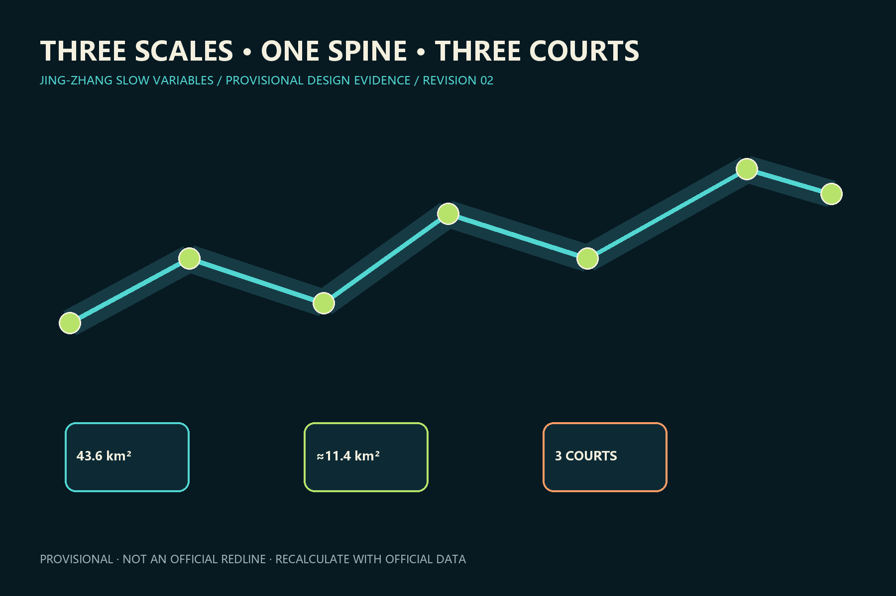
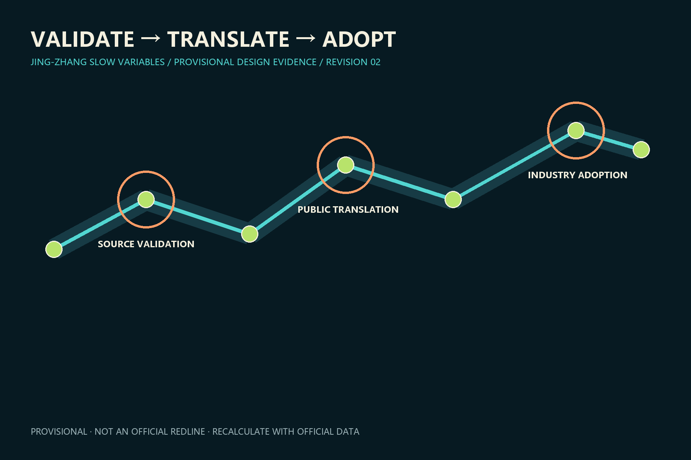
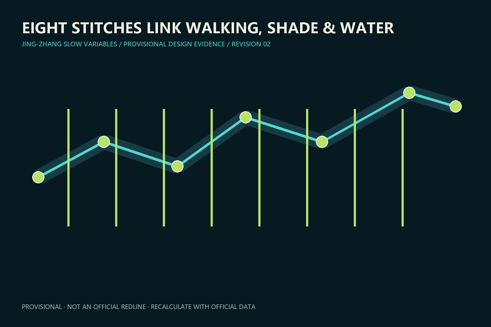
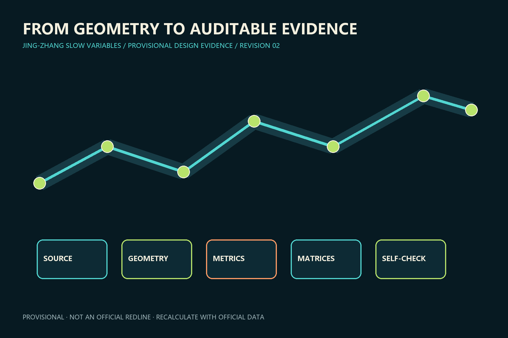

京张慢变量 / JING-ZHANG SLOW VARIABLES
Long-horizon urban infrastructure calibrates fast AI iteration.
京张慢变量 / JING-ZHANG SLOW VARIABLES
Design basis and source inventory
The proposal uses the public announcement, Agent Taskbook, site package and source registry. Current polygons are provisional geometry for design and review, not official redlines; recalculate the full package when official data arrives. Source Source Spatial data
The spatial judgement in this section is cross-checked through geometry, metrics and audit matrices. Actions favour reversibility, maintainability and human takeover, with public benefit, accessibility and heritage continuity as decision criteria. Official boundaries, statutory controls, ownership, mobility, utility capacity and field surveys remain incomplete; intensity, area, engineering and programme statements are therefore conceptual. Professional teams must verify sources, recalculate metrics, review drawings and record changes before any approval or implementation use.

Three-level scope framework
The 43.6 km² research scope coordinates the ecosystem, the approximately 11.4 km² design scope structures renewal, and three provisional key areas test detailed design. A ledger records public benefit, owner, review date and exit rule. Standard Depth Metric
The spatial judgement in this section is cross-checked through geometry, metrics and audit matrices. Actions favour reversibility, maintainability and human takeover, with public benefit, accessibility and heritage continuity as decision criteria. Official boundaries, statutory controls, ownership, mobility, utility capacity and field surveys remain incomplete; intensity, area, engineering and programme statements are therefore conceptual. Professional teams must verify sources, recalculate metrics, review drawings and record changes before any approval or implementation use.

Industry and future-city strategy
Two rails and five growth rings represent soil, water, shade, walking and trust. Research, validation, translation, adoption and global community form a research-to-adoption chain; seven ecosystem references remain concepts, not confirmed investments. Source Standard Depth
The spatial judgement in this section is cross-checked through geometry, metrics and audit matrices. Actions favour reversibility, maintainability and human takeover, with public benefit, accessibility and heritage continuity as decision criteria. Official boundaries, statutory controls, ownership, mobility, utility capacity and field surveys remain incomplete; intensity, area, engineering and programme statements are therefore conceptual. Professional teams must verify sources, recalculate metrics, review drawings and record changes before any approval or implementation use.
Overall urban renewal and regulatory-plan-depth design
One slow-variable spine, three validation courts, eight east–west stitches and two wings organize the area. Land-use terminology follows the registered classification reference; retain, adapt, infill and conditionally rebuild in that order. Standard Spatial data Depth
The spatial judgement in this section is cross-checked through geometry, metrics and audit matrices. Actions favour reversibility, maintainability and human takeover, with public benefit, accessibility and heritage continuity as decision criteria. Official boundaries, statutory controls, ownership, mobility, utility capacity and field surveys remain incomplete; intensity, area, engineering and programme statements are therefore conceptual. Professional teams must verify sources, recalculate metrics, review drawings and record changes before any approval or implementation use.
Detailed design of three key areas
Zhongzhiyuan validates at source, AI Origin translates research for the public, and Dazhongsi supports industry adoption. Each court links programme, walking, public space and reversible testing. Spatial data Spatial data Spatial data
The spatial judgement in this section is cross-checked through geometry, metrics and audit matrices. Actions favour reversibility, maintainability and human takeover, with public benefit, accessibility and heritage continuity as decision criteria. Official boundaries, statutory controls, ownership, mobility, utility capacity and field surveys remain incomplete; intensity, area, engineering and programme statements are therefore conceptual. Professional teams must verify sources, recalculate metrics, review drawings and record changes before any approval or implementation use.

AI ecosystem, personas and AI+ scenarios
Five personas and twelve scenarios cover shade, water, accessibility, staffed service, robotics, bias learning, open source, family care, SME trials, heritage, night safety and a global developer season. Three industry testbeds require safe stopping, human fallback and revocable authorization. Standard Standard Depth
The spatial judgement in this section is cross-checked through geometry, metrics and audit matrices. Actions favour reversibility, maintainability and human takeover, with public benefit, accessibility and heritage continuity as decision criteria. Official boundaries, statutory controls, ownership, mobility, utility capacity and field surveys remain incomplete; intensity, area, engineering and programme statements are therefore conceptual. Professional teams must verify sources, recalculate metrics, review drawings and record changes before any approval or implementation use.
Land use, building scale and renewal logic
Retain mature communities and adaptable industrial fabric; renovate for public ground floors and shared labs; decide demolition or rebuilding only after title, structure, heritage and statutory-plan checks. Spatial data Depth
The spatial judgement in this section is cross-checked through geometry, metrics and audit matrices. Actions favour reversibility, maintainability and human takeover, with public benefit, accessibility and heritage continuity as decision criteria. Official boundaries, statutory controls, ownership, mobility, utility capacity and field surveys remain incomplete; intensity, area, engineering and programme statements are therefore conceptual. Professional teams must verify sources, recalculate metrics, review drawings and record changes before any approval or implementation use.
Mobility, rail, utilities and public services
A walking spine, eight conceptual stitches, three station loops and low-speed test branches form mobility. Rain gardens, maintainable sensing and low-carbon edge computing await specialist review. Spatial data Depth Depth
The spatial judgement in this section is cross-checked through geometry, metrics and audit matrices. Actions favour reversibility, maintainability and human takeover, with public benefit, accessibility and heritage continuity as decision criteria. Official boundaries, statutory controls, ownership, mobility, utility capacity and field surveys remain incomplete; intensity, area, engineering and programme statements are therefore conceptual. Professional teams must verify sources, recalculate metrics, review drawings and record changes before any approval or implementation use.
Blue-green space, public realm and character
AI pilots must not reduce shade continuity, sponge capacity or accessible movement. Durable railway-scale materials and replaceable digital fittings protect heritage views. Spatial data Spatial data Metric
The spatial judgement in this section is cross-checked through geometry, metrics and audit matrices. Actions favour reversibility, maintainability and human takeover, with public benefit, accessibility and heritage continuity as decision criteria. Official boundaries, statutory controls, ownership, mobility, utility capacity and field surveys remain incomplete; intensity, area, engineering and programme statements are therefore conceptual. Professional teams must verify sources, recalculate metrics, review drawings and record changes before any approval or implementation use.

Projects, policy and phasing
Six conceptual projects cover the spine, three courts, stitch safety and public ledger. Reversible pilots come first; intensity waits for official controls. Review each pilot after 12 months and stop when benefit or safety thresholds fail. Spatial data Depth Depth
The spatial judgement in this section is cross-checked through geometry, metrics and audit matrices. Actions favour reversibility, maintainability and human takeover, with public benefit, accessibility and heritage continuity as decision criteria. Official boundaries, statutory controls, ownership, mobility, utility capacity and field surveys remain incomplete; intensity, area, engineering and programme statements are therefore conceptual. Professional teams must verify sources, recalculate metrics, review drawings and record changes before any approval or implementation use.
Metrics, recalculation and compliance
Area, green and public-space ratios, footprints and key-area counts are calculated from GeoJSON in EPSG:4548. FAR stays pending; five slow-variable baselines require field measurement. Metric Metric Depth
The spatial judgement in this section is cross-checked through geometry, metrics and audit matrices. Actions favour reversibility, maintainability and human takeover, with public benefit, accessibility and heritage continuity as decision criteria. Official boundaries, statutory controls, ownership, mobility, utility capacity and field surveys remain incomplete; intensity, area, engineering and programme statements are therefore conceptual. Professional teams must verify sources, recalculate metrics, review drawings and record changes before any approval or implementation use.

Risks, copyright and compliance
Risks include mistaking provisional geometry for a redline, concepts for commitments, or model output for professional conclusions. Four cultural nodes are the Zhan Tianyou spirit hall, Visible Failure Wall, Contributor Rings and Global AI Public Value Forum Station. Source Depth Standard
The spatial judgement in this section is cross-checked through geometry, metrics and audit matrices. Actions favour reversibility, maintainability and human takeover, with public benefit, accessibility and heritage continuity as decision criteria. Official boundaries, statutory controls, ownership, mobility, utility capacity and field surveys remain incomplete; intensity, area, engineering and programme statements are therefore conceptual. Professional teams must verify sources, recalculate metrics, review drawings and record changes before any approval or implementation use.
References
See sources.json and the three matrices for complete provenance and coverage. Source Source
The spatial judgement in this section is cross-checked through geometry, metrics and audit matrices. Actions favour reversibility, maintainability and human takeover, with public benefit, accessibility and heritage continuity as decision criteria. Official boundaries, statutory controls, ownership, mobility, utility capacity and field surveys remain incomplete; intensity, area, engineering and programme statements are therefore conceptual. Professional teams must verify sources, recalculate metrics, review drawings and record changes before any approval or implementation use.